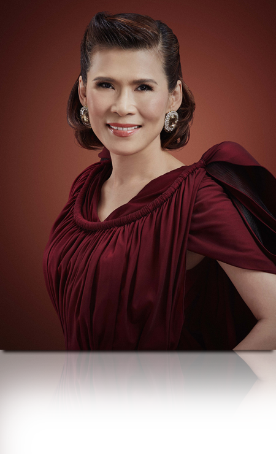
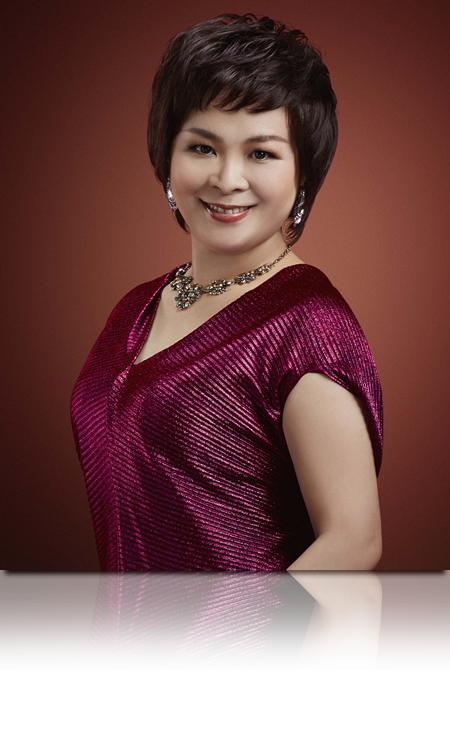
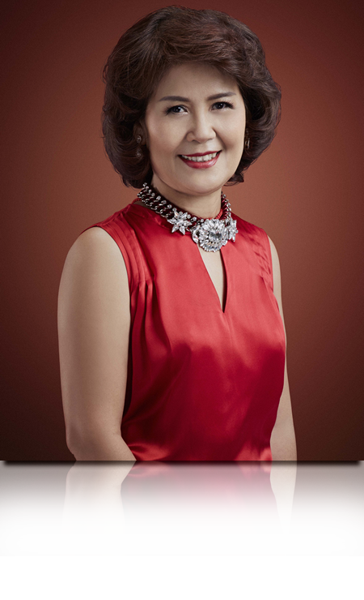
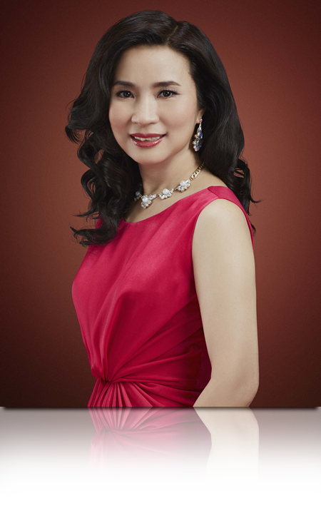
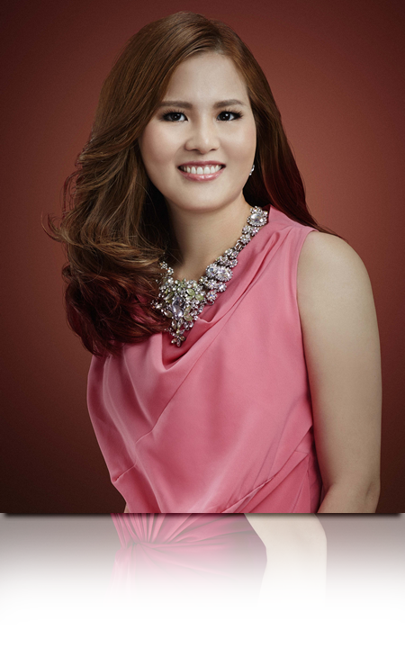
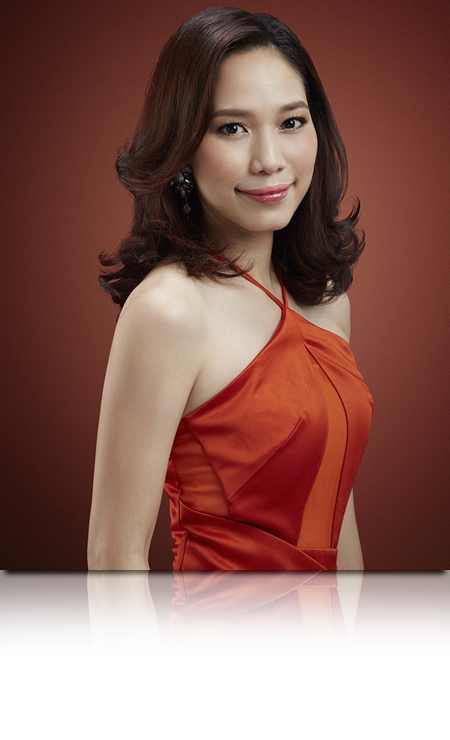
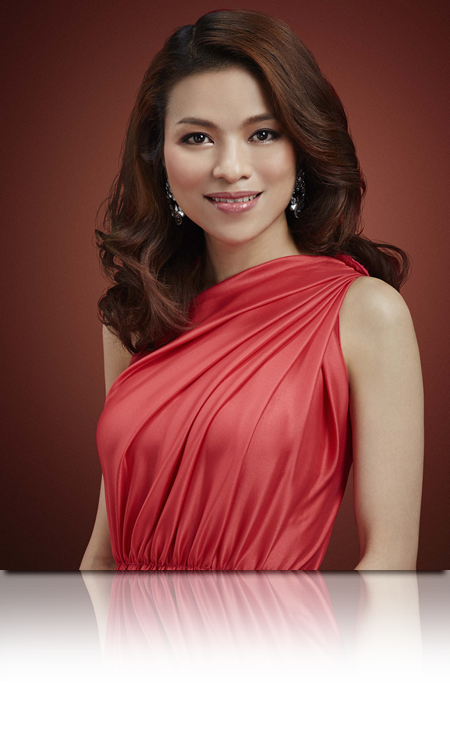

ศักดิ์ - บุญสิริ ธนประกอบ
นักธุรกิจแอมเวย์ระดับเพชรคู่
นักธุรกิจแอมเวย์ระดับเพชรคู่
Lifting Solution
ความสวยที่ไม่มีวันหยุด
ความสวยที่ไม่มีวันหยุด
“รอยยิ้มแห่งความสุขและความภาคภูมิใจ เกิดขึ้นทุกวันที่หน้ากระจกของคุณบุญสิริ เพราะเธอมองเห็นผิวพรรณที่ดูเปล่งประกาย และความกระชับในแบบ Lifting Solution”
“เมื่อก่อนดิฉันเป็นพนักงานมืออาชีพมา 11 ปี ทำให้คิดว่าถ้าเรามีธุรกิจเป็นของตัวเองก็น่าจะมีเวลาให้ครอบครัวมากขึ้น จนถึงวันนี้รวม 28 ปี
ในธุรกิจแอมเวย์ เรากลับไม่เคยคิดเปิดบริษัทของตัวเองอีกเลย เพราะแอมเวย์ตอบโจทย์เราทุกอย่างทั้งด้านการใช้ชีวิตและเรื่องความงาม
ดิฉันเรียนรู้จากการใช้จริงว่าผลิตภัณฑ์ทุกๆ ชิ้นดีมาก แม้แต่เพื่อนรอบตัวที่ชอบซื้อแบรนด์เนมก็เริ่มเปลี่ยนทัศนคติมาใช้อาร์ทิสทรีเหมือนกัน
เพราะเขาเห็นผลลัพธ์จากผิวของดิฉัน
สำหรับดิฉัน ปัญหาผิวบริเวณรอบดวงตาดูแลยากที่สุด เพราะพฤติกรรมของพวกเราคือนอนดึก ทั้งยังชอบขยี้ตา รวมถึงสภาพผิวที่ถดถอย
ไปตามวัย เมื่อประมาณ 3-4 ปีที่แล้ว ดิฉันเริ่มรู้สึกว่าผิวรอบดวงตามีริ้วรอย ร่วงโรย และดูไม่กระชับ ยิ่งเวลาเรายิ้มหรือหัวเราะเยอะๆ ริ้วรอย
ยิ่งเห็นชัดและมากขึ้นๆ ดิฉันจึงเริ่มใช้อายครีมของอาร์ทิสทรีอย่างจริงจัง และเป็นขั้นตอนที่พิถีพิถันใส่ใจมากที่สุด
เมื่อได้สัมผัส ยูธ เอ็กซ์เทนด์ อัลตร้า ลิฟท์ติ้ง อาย ซีรัม คอนเซ็นเทรต ชอบมากตั้งแต่ลองครั้งแรก เพราะใช้แล้วเห็นผลของผิวรอบดวงตา
ที่ดูกระชับขึ้น ผ่านไปอาทิตย์แรกซึ่งใช้เพียงอาย ซีรัม อย่างเดียว ก็เริ่มรู้สึกถึงผิวที่กระชับขึ้นอย่างเป็นธรรมชาติ ยิ่งเมื่อใช้คู่กับ ยูธ เอ็กซ์เทนด์
เอ็นริชชิ่ง อาย ครีม ก็รู้สึกว่าผลลัพธ์ดีขึ้นไปอีก จากที่เคยเห็นริ้วรอยรอบดวงตา ตอนนี้ผิวรอบๆ ดวงตาดูกระชับขึ้นอย่าง รู้สึกได้ ผิวหน้า
และรอบดวงตากลับเนียนขึ้น ประทับใจมากเลยค่ะ แทบไม่น่าเชื่อว่าจากดรอปเปอร์ที่ออกมาเป็นหยดเล็กๆ แต่เข้มข้น มอบคุณค่าที่มากพอ
ในการบำรุงผิวรอบดวงตาให้ดูอ่อนเยาว์ เนื้อซีรัมก็ซึมซาบเร็ว เพียงแตะๆ ก็ซึมเข้าสู่ชั้นผิวแล้ว
การใช้ชุดผลิตภัณฑ์ยูธ เอ็กซ์เทนด์ อัลตร้า ร่วมกันทั้งครีม เอสเซนส์ และอายซีรัม ยิ่งตอบโจทย์เรื่องความกระชับของผิวทั้งใบหน้า
และรอบดวงตา แบบ Lifting Solution จริงๆ กลายเป็นขั้นตอนความสุขประจำวันที่ทำให้ดิฉันยิ้มกับตัวเองได้เสมอ
และไม่ต้องการวันหยุดให้ผิวเลยจริงๆ ค่ะ”

ศรีศักดิ์ - นันท์ชญาณ์ หุ่นดี
นักธุรกิจแอมเวย์ระดับเพชรคู่
นักธุรกิจแอมเวย์ระดับเพชรคู่
พลิกความงามให้ชีวิตด้วย
Lifting Solution จากอาร์ทิสทรี
Lifting Solution จากอาร์ทิสทรี
“มอบของขวัญให้กับดวงตาคู่สวยของเราด้วยการใช้ผลิตภัณฑ์ที่ช่วยคงความอ่อนเยาว์ดูกระชับ ยูธ เอ็กซ์เทนด์ อัลตร้า ลิฟท์ติ้งอาย ซีรัม คอนเซ็นเทรต คือคีย์เวิร์ดที่สำคัญ”
“พื้นฐานเรื่องความสวยความงามของดิฉันแทบไม่เคยมีมาก่อนเลยก็ว่าได้ค่ะ เรียนจบวิศวกรรมศาสตร์ จุฬาฯ เริ่มงานเป็นวิศวกร
หลังจากนั้นก็ไปทำงานบนแท่นขุดเจาะกลางทะเล เป็นคนลุยๆ ไม่แต่งหน้า จนวันหนึ่งได้ทำความรู้จักกับธุรกิจแอมเวย์ จึงเป็นจุดเริ่มต้น
ค่อยๆศึกษาทั้งเรื่องธุรกิจและความงาม เมื่อรู้ที่มาที่ไปก็มีความเชื่อมั่นอยากลองใช้ จนตอนนี้ใช้อาร์ทิสทรีมาเกือบ 20 ปีแล้ว เราเห็นอยู่ตลอด
ถึงการพัฒนาอย่างต่อเนื่องด้วยนวัตกรรมที่ล้ำสมัย พร้อมส่วนผสมต่างๆ ที่ปฏิวัติวงการสกินแคร์
ดิฉันได้ลองใช้ผลิตภัณฑ์ทุกชิ้นที่ออกใหม่ เพื่อให้ตอบโจทย์ปัญหาของผิวพรรณที่แตกต่างกันไปในแต่ละช่วงวัย และช่วงเวลา
นปัจจุบันเรื่องริ้วรอยและความกระชับคือความกังวลหลัก ทั้งกับผิวหน้าและรอบดวงตาซึ่งบอบบางกว่าส่วนอื่นๆ โชคดีที่ดิฉันบำรุงผิวอย่างดี
ด้วยผลิตภัณฑ์กลุ่มยูธ เอ็กซ์เทนด์ อัลตร้า ทั้งครีมและเอสเซนส์ คอนเซ็นเทรต ที่ตอบโจทย์เรื่องช่วยให้ผิวดูกระชับ สำหรับปัญหารอบดวงตา
ดิฉันมีความกังวลหลักเรื่องเดียวคือผิวรอบดวงตาไม่กระชับ ถ้าพักผ่อนน้อยยิ่งเห็นถึงปัญหาทั้งผิวร่วงโรย และมีริ้วรอย
พอได้ลองใช้ ยูธ เอ็กซ์เทนด์ อัลตร้า ลิฟท์ติ้ง อาย ซีรัม คอนเซ็นเทรต รวมกับยูธ เอ็กซ์เทนด์ เอ็นริชชิ่ง อาย ครีม ความกังวลเรื่องผิว
ไม่กระชับและริ้วรอยรอบดวงตาก็หายไป รู้สึกได้เลยค่ะว่าผิวรอบดวงตาเฟิร์มขึ้น เพราะเนื้อสัมผัสที่อุดมด้วยคุณค่าของสารสกัดเข้มข้น
จากเรด คาเวียร์ และสารสกัดต่างๆ รู้สึกได้ตั้งแต่ครั้งแรกที่ใช้ และยิ่งใช้ร่วมกับครีมและเอสเซนส์ในกลุ่ม ยูธ เอ็กซ์เทนด์ อัลตร้าแล้ว ก็เสริม
ให้เห็นผลลัพธ์ที่น่าประทับใจทั้งใบหน้าในแบบ Lifting Solution
ดวงตาเป็นสื่อสำคัญที่สร้างประทับใจให้กับผู้พบเห็น หากเราจะตอบแทนดวงตาคู่นี้ด้วยการบำรุงดูแลอย่างดีจากซีรัมสำหรับรอบดวงตา
ดิฉันมั่นใจว่านี่คือของขวัญที่คู่ควรที่สุด”

จิรสุดา – สงกรานต์ ชมศรี
นักธุรกิจแอมเวย์ระดับเพชรบริหาร
นักธุรกิจแอมเวย์ระดับเพชรบริหาร
ย้อนความอ่อนเยาว์ด้วย
Lifting Solution
Lifting Solution
“การย้อนวัยให้ผิวด้วยสกินแคร์ที่เปี่ยมประสิทธิภาพเป็นเรื่องที่ไม่ไกลเกินจริงและเธอยิ่งเชื่อมั่นเมื่อได้ใช้ผลิตภัณฑ์อาย ซีรัม ใหม่ เพราะผิวรอบดวงตาดูอ่อนเยาว์ทำให้เหมือนย้อนวัยได้จริงๆ”
“ดิฉันเริ่มต้นใช้อาร์ทิสทรีจากผลิตภัณฑ์สำหรับผิวแห้งก่อน เพื่อช่วยบำรุงผิวพรรณให้ชุ่มชื่นนวลเนียนขึ้น พอมีผลิตภัณฑ์ใหม่ๆก็ทดลองใช้เพราะเชื่อมั่นในคุณภาพของผลิตภัณฑ์ และรู้สึกได้ถึงผลลัพธ์ที่ดีขึ้นของผิว เสมือนเป็นผู้ช่วยที่มาย้อนวัยให้กับเรา
สำหรับผิวรอบดวงตา ตอนแรกก็ใช้เฉพาะยูธ เอ็กซ์เทนด์ เอ็นริชชิ่ง อาย ครีม เพื่อให้ผิวรอบดวงตาของเราที่เริ่มมีริ้วรอยเล็กๆดูชุ่มชื่นนวลเนียนและริ้วรอยจางลง พอมียูธ เอ็กซ์เทนด์ อัลตร้า ลิฟท์ติ้ง อาย ซีรัม คอนเซ็นเทรต ก็ใช้ร่วมกัน ตัวเองรู้สึกได้เลยว่าเห็นผลลัพธ์ที่น่าประทับใจ ปัญหารอบดวงตาที่ดูขาดความกระชับ ก็ดูอ่อนเยาว์ขึ้น กลายเป็นผลิตภัณฑ์คู่ขวัญใหม่ที่ดิฉันขาดไม่ได้เลยทีเดียว
ทันทีที่ได้ใช้ ปัญหาผิวรอบดวงตาที่เคยกังวลก็ลดลงอย่างรู้สึกได้ค่ะ เนื้อซีรัมเนียนละเอียดมาก ลงซีรัมเสร็จก็ใช้อายครีมบำรุงต่อกลิ่นหอมละมุนทำให้รู้สึกรื่นรมย์ ซึมซาบสู่ผิวรวดเร็ว พอมองกระจกแล้วเห็นถึงผิวที่กระชับ ก็ยิ่งประทับใจ ซีรัมตัวใหม่นี้เปรียบเหมือนกับผู้ช่วยที่ดูแลปัญหาผิวพรรณของเราได้ดีจริงๆ
ในวัย 55 แล้วแต่ยังมีคนทักว่าดูเหมือนคนอายุ 40 ปีต้นๆ ดิฉันคิดว่านั่นเป็นเพราะเราใช้ผลิตภัณฑ์ที่เหมาะกับตัวเองอย่างต่อเนื่องและสม่ำเสมอดิฉันเชื่อมั่นว่าผลิตภัณฑ์บำรุงผิวที่ดีอย่างอาร์ทิสทรี ยูธ เอ็กซ์เทนด์ อัลตร้า ที่ตอบโจทย์ปัญหาผิวแบบ Lifting Solutionช่วยให้เราดูเหมือนย้อนวัยได้จริงๆ ”

สรกฤช - นภภัค อังกิติตระกูล
นักธุรกิจแอมเวย์ระดับเพชร
นักธุรกิจแอมเวย์ระดับเพชร
10 วัน พิสูจน์ความประทับใจ
ของ Lifting Solution
ของ Lifting Solution
“ความเชื่อมั่นในอาร์ทิสทรีของคุณนภภัคไม่เคยแปรเปลี่ยนมาตลอดกว่า 20 ปีและสำหรับ Lifting Solution เธอพิสูจน์ความประทับใจใน 10 วันเท่านั้น”
“ประสบการณ์จากการทำงานเภสัชวิเคราะห์ และเป็นอาจารย์อยู่ที่คณะเภสัชศาสตร์ มหาวิทยาลัยขอนแก่น ทั้งยังเคยทำงานที่กรมวิทยาศาสตร์การแพทย์ ดูเรื่องการตรวจวิเคราะห์วัตถุมีพิษและเครื่องสำอาง ทำให้ดิฉันให้ความสำคัญมากกับเรื่องส่วนผสมในเครื่องสำอางที่ใช้ แน่นอนว่าทุกผลิตภัณฑ์ของอาร์ทิสทรี รวมทั้งยูธ เอ็กซ์เทนด์ อัลตร้า ลิฟท์ติ้ง อาย ซีรัม คอนเซ็นเทรตประทับใจเราตั้งแต่แรกในเรื่องความปลอดภัยต่อผิว
ดิฉันเป็นคนที่มีปัญหาผิวตั้งแต่ช่วงวัยรุ่น จึงใช้ผลิตภัณฑ์พวกเวชสำอางค์ค่อนข้างเยอะ พอมารู้จักกับอาร์ทิสทรี จึงเริ่มต้นใช้ผลิตภัณฑ์บำรุงผิวต่างๆ ด้วยความน่าเชื่อถือของแบรนด์และ แล็บในอเมริกา เราก็รู้สึกวางใจและลองใช้ไปเรื่อยๆ รู้สึกได้ว่าปัญหาผิวลดลง ไม่แสบและผิวแข็งแรงขึ้น ดิฉันกล้าบอกเลยว่าตัวเองใช้แล้วได้ผล เพราะนานวันผิวยิ่งชุ่มชื้นขึ้น แตกต่างจากการใช้ยาซึ่งส่งผลกระทบข้างเคียง
ปัญหาใหญ่ในวัยนี้คือผิวที่ไม่กระชับ ความร่วงโรย และริ้วรอยรอบดวงตา ยิ่งเวลานอนน้อยยิ่งเห็นผิวรอบดวงตาขาดความกระชับและ
ร่องลึกชัดมาก เมื่อได้มาใช้ยูธ เอ็กซ์เทนด์ อัลตร้า ลิฟท์ติ้ง อาย ซีรัม คอนเซ็นเทรต ร่วมกับยูธ เอ็กซ์เทนด์ เอ็นริชชิ่ง อาย ครีม
เพียง 10 กว่าวัน รู้สึกได้ถึงผิวที่ดูสดใสขึ้น ปกติเวลาแต่งหน้าจะต้องติดเทปให้ตาดูเป็นชั้น แต่ตอนนี้ไม่จำเป็นแล้ว เพราะผิวรอบดวงตาดูกระชับ
ยิ่งกว่านั้นเนื้อซีรัมซึมสู่ผิวเร็ว ไม่เหนียวเหนอะหนะ อ่อนโยน ทาเสร็จก็บำรุงผิวหน้าต่อด้วยยูธ เอ็กซ์เทนด์ อัลตร้า ครีมและเอสเซนส์
คอนเซ็นเทรต เพื่อผลลัพธ์แบบ Lifting Solution
ล่าสุดเพื่อนทักว่าไปทำอะไรมา ทำไมวันนี้ดูหน้าอ่อนวัยกว่าเดิม ผลลัพธ์ที่ปรากฎบนผิวหน้าคือคำตอบที่ดีว่า ทำไม 26 ปีที่ผ่านมาดิฉันไม่เคยเปลี่ยนใจจากอาร์ทิสทรีเลยสักครั้งเดียว”

นิยต พันธุ์สบาย - ธัญญรัตน์ ปัญญาวรเกียรตี
นักธุรกิจแอมเวย์ระดับเพชร
นักธุรกิจแอมเวย์ระดับเพชร
“อาย ซีรัม” เป็นความรัก
ที่ไม่อาจถอนตัว
ที่ไม่อาจถอนตัว
“ด้วยผลลัพธ์อันเปี่ยมประสิทธิภาพที่รู้สึกได้ด้วยตัวเอง ทำให้คุณธัญญรัตน์ยอมรับว่า ยูธ เอ็กซ์เทนด์ อัลตร้า ลิฟท์ติ้ง อาย ซีรัมคอนเซ็นเทรต เป็นความรักครั้งใหม่ที่เธอถอนตัวไม่ขึ้น ”
“ในยุคนี้ เรื่องความสวยความงามและสุขภาพเป็นสิ่งที่ทุกคนให้ความสำคัญมาก ไม่ว่าจะเป็นผู้ชายหรือผู้หญิง และในวัยที่แตกต่างก็ต้องการการดูแลตัวเองที่แตกต่างกันด้วย ซึ่งอาร์ทิสทรีสามารถตอบโจทย์ได้ตรงกับความต้องการทั้งหมด
สำหรับตัวดิฉันเองเป็นคนที่ไม่ได้มีปัญหาเรื่องริ้วรอยเยอะมาก แต่มีความกังวลเรื่องผิวไม่กระชับรอบดวงตากับรอยหมองคล้ำ เพราะดวงตาเป็นบริเวณที่อ่อนโยนและบอบบางที่สุด และเมื่อเกิดแล้วจะแก้ไขได้ยากที่สุดด้วย ดิฉันจึงต้องป้องกันมาตลอด อายครีมเป็นผลิตภัณฑ์ที่ขาดไม่ได้เลย และแน่นอนว่าเมื่อมีผลิตภัณฑ์ใหม่ล่าสุดสำหรับดูแลผิวรอบดวงตา ดิฉันจึงไม่ยอมพลาดค่ะ
ครั้งแรกที่ใช้ ยูธ เอ็กซ์เทนด์ อัลตร้า ลิฟท์ติ้ง อาย ซีรัม คอนเซ็นเทรต สิ่งที่สัมผัสได้คือเนื้อซีรัมเข้มข้น พอเกลี่ยทาลงไปที่ผิว เนื้อซีรัมซึมซาบอย่างรวดเร็วโดยไม่ทิ้งความเหนอะหนะ รู้สึกว่าผิวรอบดวงตาตึงๆ นิดๆ พอตื่นเช้ามารู้สึกว่ารอบดวงตาดูนวลเนียนกระจ่างขึ้นมากตั้งแต่คืนแรกที่ใช้ ยิ่งเมื่อใช้ร่วมกับผลิตภัณฑ์ชุดยูธ เอ็กซ์เทนด์ อัลตร้า จึงเป็น Lifting Solution ที่ช่วยดูแลความกระชับของผิวรอบดวงตาและใบหน้าอย่างแท้จริง
เป็นผลิตภัณฑ์ที่ปลื้มมาก ใช้แล้วอยากบอกต่อ เพราะรอบดวงตาเป็นปัญหาที่ทุกคนต้องเจอ แล้ว ยูธ เอ็กซ์เทนด์ อัลตร้า ลิฟท์ติ้งอาย ซีรัม คอนเซ็นเทรต ก็ตอบโจทย์ปัญหาผิวรอบดวงตาของดิฉันได้ ใช้แล้วรู้สึกรักเลยจริงๆ ค่ะ”

ธิรดา พื้นชมภูจิรโชติ – รุ่งรัฐ จิตตการ
นักธุรกิจแอมเวย์ระดับมรกตสองผู้สถาปนา
นักธุรกิจแอมเวย์ระดับมรกตสองผู้สถาปนา
ซีรัมในดวงใจของแพทย์ความงาม
“ด้วยความเป็นแพทย์ด้านความงามการจะเลือกใช้ผลิตภัณฑ์บำรุงผิวแต่ละชิ้นจึงต้องผ่านการศึกษาและพิถีพิถันเลือกอย่างผู้รู้จริง ผลลัพธ์ที่น่าประทับใจในแบบLifting Solution ผ่านการการันตีแล้วจากเธอ”
“การดูแลผิวให้สวยและดูมีสุขภาพดี ต้องมาจากทั้งภายในและภายนอก ดิฉันรับประทานผลิตภัณฑ์เสริมอาหารเป็นประจำควบคู่กับการใช้สกินแคร์ของอาร์ทิสทรี ถึงจุดหนึ่งรู้สึกถึงการบำรุงที่ดีขึ้นจริงๆ สามารถลดเลือนปัญหาผิวได้ตรงจุดมากขึ้น
ดิฉันได้มีโอกาสทดลองใช้ อาร์ทิสทรีตั้งแต่ผลิตภัณฑ์ชุดพื้นฐาน ผลิตภัณฑ์กลุ่มผลิตภัณฑ์เพื่อผิวกระจ่างใส และพออายุมากขึ้นก็เริ่มมาใช้
กลุ่มผลิตภัณฑ์ต่อต้านริ้วรอย และกลุ่มเพื่อผิวกระชับ ก็มีคนทักว่าสุขภาพผิวดีขึ้น สำหรับผิวรอบดวงตา ดิฉันให้การดูแลเป็นพิเศษ
ผลิตภัณฑ์บำรุงรอบดวงตาส่วนใหญ่ให้ผลลัพธ์ในเรื่องความชุ่มชื้น หรืออาจจะมีส่วนผสมวิตามินซีที่ให้พลังงานในการฟื้นบำรุงผิว แต่สำหรับ
ยูธ เอ็กซ์เทนด์ อัลตร้า ลิฟท์ติ้ง อาย ซีรัม คอนเซ็นเทรต พิเศษกว่าเพราะเข้มข้นด้วยคุณค่าสารสกัดจากเรด คาเวียร์ พร้อมเทคโนโลยี
Micro Cleanse ซึ่งดิฉันเชื่อมั่นเลยค่ะว่า จะช่วยฟื้นบำรุงผิวรอบดวงตาได้อย่างมีประสิทธิภาพ
จากที่เป็นคนผิวแห้งเกิดริ้วรอยได้ง่าย บวกกับเป็นคนอารมณ์ดีหัวเราะเยอะ หลังลองใช้ยูธ เอ็กซ์เทนด์ อัลตร้า ลิฟท์ติ้ง อาย ซีรัมคอนเซ็นเทรต 2 สัปดาห์ รู้สึกว่าปัญหาเรื่องผิวร่วมโรยและริ้วรอยรอบดวงตาลดลงเยอะเลยค่ะ รู้สึกได้เลยถึงผิวที่กระชับ ยิ่งเมื่อใช้ร่วมกับผลิตภัณฑ์ในกลุ่มยูธ เอ็กซ์เทนด์ อัลตร้า ก็เหมือนเป็นการช่วยให้ผิวดีขึ้นโดยรวม ริ้วรอยที่มีดูลดเลือนลง ผิวดูกระจ่างสดใสอ่อนวัยแบบ Rosy Glow
ในฐานะผู้เชี่ยวชาญด้านความงาม มองว่าการดูแลผิวที่ดีควรเลือกผลิตภัณฑ์ให้เหมาะกับปัญหาผิวและเป็นผลิตภัณฑ์ที่ผ่านการทดสอบจากผู้เชี่ยวชาญแล้ว ในส่วนของการฟื้นบำรุงผิวรอบดวงตาก็เช่นกัน และควรดูแลสุขภาพทั้งภายในและภายนอกร่วมกัน เพื่อให้ความอ่อนเยาว์ของดวงตาและความสวยงามของผิวพรรณเปล่งประกายออกมาจากภายในได้อย่างแท้จริงค่ะ”

ภรหทัย ชีวสุทธิกุล
นักธุรกิจแอมเวย์ระดับมรกต
นักธุรกิจแอมเวย์ระดับมรกต
เพราะผลลัพธ์จาก Lifting Solution
ผิวขาดความกระชับจึงไม่ใช่ปัญหาผิวอีกต่อไป
ผิวขาดความกระชับจึงไม่ใช่ปัญหาผิวอีกต่อไป
“จากผู้หญิงคนหนึ่งที่เคยไม่ใส่ใจดูแลตัวเองคุณภรหทัยกลับเชื่อมั่นในพลังแห่งความงามเมื่อเธอเห็นถึงผลลัพธ์ที่น่าประทับใจจากผลิตภัณฑ์อาร์ทิสทรี”
“ดิฉันเป็นนักกีฬาวอลเลย์บอลตั้งแต่ตอนเด็กๆ จนจบมหาวิทยาลัย การดูแลผิวหน้ากับนักกีฬานี่เหมือนเป็นเรื่องไกลกันมาก (ยิ้ม) จนวันหนึ่งได้รู้จักธุรกิจแอมเวย์ ได้ลองประกวดอาร์ทิสทรี บิวตี้ ทาเลนท์ และได้รับรางวัลชนะเลิศในปี 2006 นับเป็นจุดเริ่มต้นในการดูแลตัวเองมากยิ่งขึ้น
นักวิทยาศาสตร์ของอาร์ทิสทรีบอกว่า ผิวหนังรอบดวงตาบอบบางกว่าผิวหน้าถึง 10 เท่า นั่นเป็นเหตุผลให้เราต้องใช้ผลิตภัณฑ์อาย ครีม
เฉพาะสำหรับรอบดวงตา สำหรับดิฉันในวัยใกล้แตะเลข 4 การใช้ผลิตภัณฑ์บำรุงผิวรอบดวงตาจึงเป็นเรื่องจำเป็นที่สุดเพราะผิวรอบดวงตา
เป็นตัวบ่งบอกอายุเราทั้งหมดด้วย แม้แต่ความถี่ของการกะพริบตาในแต่ละวันก็มีผลต่อการเกิดริ้วรอย การแสดงออกทางอารมณ์ คนยิ้มบ่อย
หัวเราะเยอะก็จะมีริ้วรอยมากกว่า รวมถึงรูปตาก็มีผลทำให้เกิดริ้วรอยใต้ตาด้วย ในเมื่อมีปัจจัยกระตุ้นให้เกิดริ้วรอยมากมาย เราจึงต้องเลือกผลิตภัณฑ์บำรุงผิวรอบดวงตาที่มีคุณภาพดีที่สุด
ยูธ เอ็กซ์เทนด์ อัลตร้า ลิฟท์ติ้ง อาย ซีรัม คอนเซ็นเทรต ตอบโจทย์ความกังวลได้ครบค่ะ ดิฉันลองใช้แล้วรู้สึกถึงความสบายรอบดวงตา
เมื่อใช้ควบคู่กับยูธ เอ็กซ์เทนด์ เอ็นริชชิ่ง อาย ครีม รู้สึกได้เลยว่าปัญหาผิวขาดความกระชับและริ้วรอยที่เคยมีดูลดเลือนลง เนื้อสัมผัส
บางเบาซึมซาบเร็วมาก ไม่มีความเหนอะ เกลี่ยง่าย กลิ่นหอมและเนื้อสีชมพูมุกให้ความรู้สึกหรูหรา และยิ่งดูแลผิวแบบครบชุดด้วยผลิตภัณฑ์
ชุด ยูธ เอ็กซ์เทนด์ อัลตร้า ทั้งเอสเซนส์และครีมด้วยแล้ว บอกเลยว่าปัญหาเรื่องผิวขาดความกระชับไม่ใช่สิ่งที่สาวๆ วัยอย่างดิฉันต้องกังวลอีกต่อไป
ผลลัพธ์จาก Lifting Solution ทำให้ดิฉันรู้สึกตื่นเต้น มั่นใจ และอยากบอกต่อให้กับทุกคนจริงๆ ค่ะ”